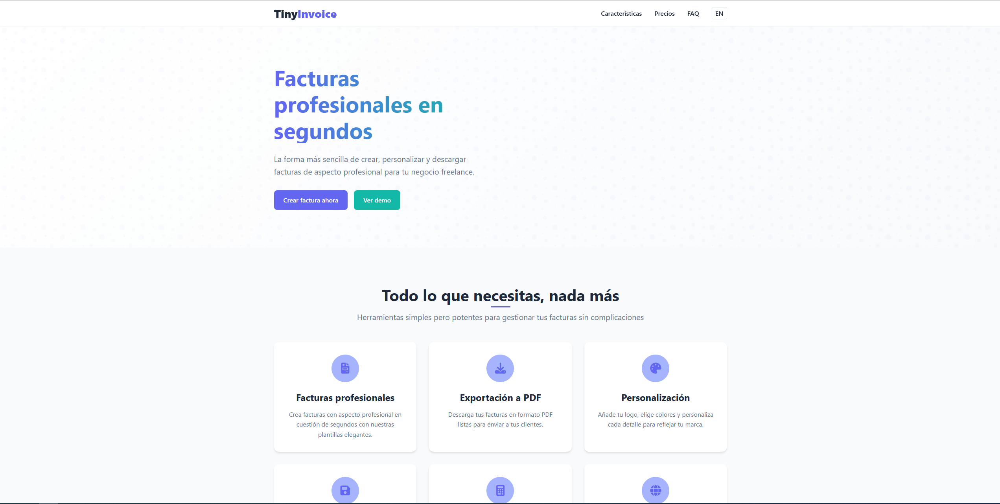

.png)
Alan Delgado Pons
Sobre mí
Soy desarrollador frontend con más de 1 año de experiencia profesional trabajando con Angular, especializado en construir interfaces modernas, funcionales y escalables. Me enfoco en escribir código limpio, modular y mantenible, siguiendo buenas prácticas y patrones de diseño. Durante este tiempo he trabajado en el desarrollo de aplicaciones web dinámicas, tanto de cara al usuario como herramientas internas, integrando APIs REST, manejando estados complejos con RxJS, y aplicando principios de diseño responsivo y accesible.
Experiencia
Desarrollador Frontend
Sling Technology
- Formando parte de una empresa con múltiples proyectos activos, participando en el desarrollo y mantenimiento de aplicaciones web utilizando Angular 16+ y despliegue en sus respectivos entornos.
- Trabajando en un entorno colaborativo con GitLab y Jenkins para gestionar la integración y el despliegue continuo (CI/CD).
- Aplicando buenas prácticas de arquitectura modular y escalable.
- Contribuyendo a la implementación de nuevas funcionalidades y a la mejora continua de las aplicaciones existentes.
Desarrollador Frontend
World2Meet
- Desarrollar, mantener y optimizar aplicaciones web SPA y SSR utilizando Angular.
- Gestionar y automatizar los pipelines CI/CD a través de Jenkins, asegurando el correcto despliegue de los entornos TST, PRE, STG y PRO.
- Implementar y gestionar despliegues continuos utilizando ArgoCD.
- Colaborar con los equipos de desarrollo y operaciones utilizando Azure DevOps para la gestión de proyectos y control de versiones.
- Documentar y mantener APIs utilizando Swagger.
- Asegurar la calidad del código a través de la implementación de las mejores prácticas, pruebas automatizadas y revisiones de código.
- Participar activamente en la resolución de problemas y la mejora continua de los procesos de entrega y despliegue.
Proyectos

TinyInvoice
Generador de facturas para Freelancers. Aplicación web que permite crear, gestionar y exportar facturas de forma rápida y sencilla sin necesidad de registro.

Tecnologías
Habilidades
Frontend
DevOps
Formación
Formación superior en Desarrollo de Aplicaciones Web (DAW)
EDIB
Ciclo Formativo de Grado Superior enfocado en el desarrollo de aplicaciones web modernas, cubriendo tanto frontend como backend.